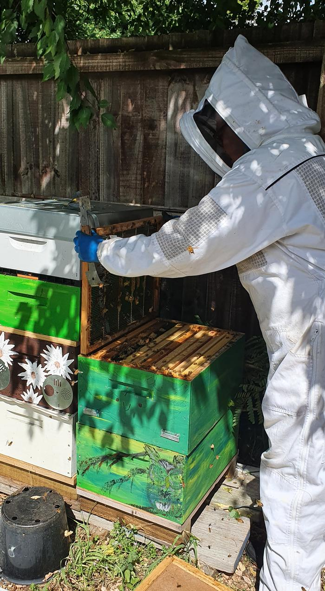

About
I'm Maria, a junior full stack developer (Mission Ready graduate, 2026) based in New Zealand.
Before software I spent years in logistics, retail and hive management, including a Commercial Beekeeping qualification. That work taught me to be reliable, to notice small problems early, and to keep things running when conditions aren't ideal.

I build things for the problems I've met myself. BeeYardLog started because I kept losing phone signal in the yard and my paper notes got messy, so I made a logbook that works offline and keeps its data on the phone.
Most recently I completed a 10-week placement at PolicyCheck, working on a production React/TypeScript codebase. I enjoy the careful side of development most: testing, tracking down bugs to their cause, and measuring before and after.
Away from the screen I love being outdoors. I'm working on two field guides: a bird book you can take out with you, and a plant book to follow.
I'm looking for my first role in software development, and I'm always learning.